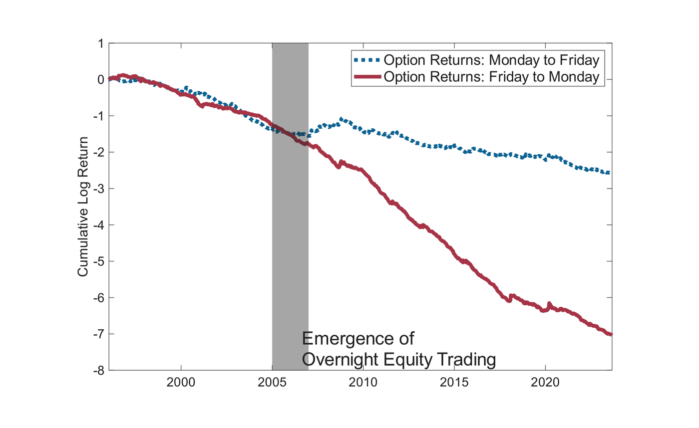
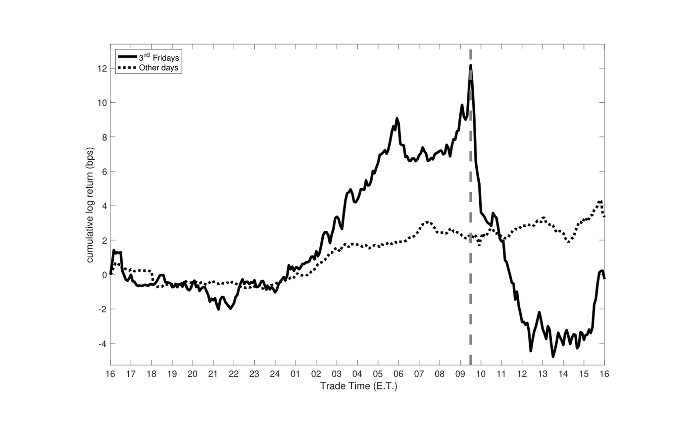
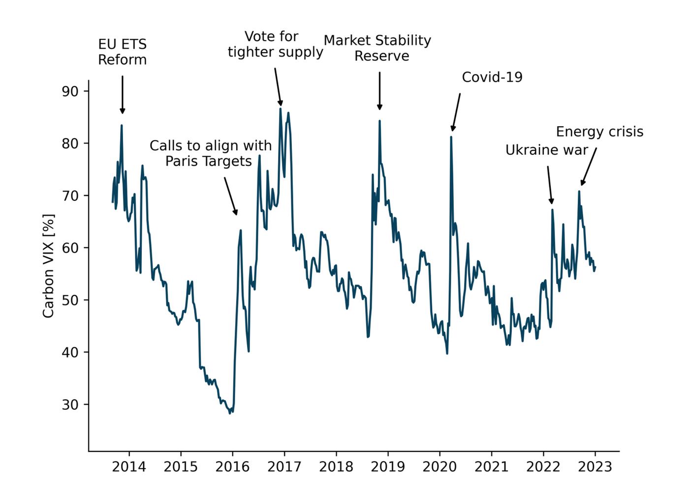

Working Papers
-
Intermediary Option Pricing
I exploit nights to show that intermediary inventory risk drives the option risk premium. Nights raise dealers' inventory risk on a schedule unrelated to economy-wide risk aversion, because the daily closure of regular equity markets lowers liquidity and impedes delta-hedge adjustments. I quantify dealers' "gap risk" and find that it predicts S&P 500 option returns overnight (when the friction binds) relative to the same options' day returns. After overnight equity trading emerged around 2006, loosening the friction on weeknights but not weekends, the intra-week option premium attenuated by nearly two thirds, especially in options where dealers' inventory is concentrated.
The emergence of overnight equity trading permanently changed the option risk premium.

-
The Third Friday Price Spike
Most U.S. equity index derivatives settle at the market open on the 3rd Friday of each month. We document that equity prices open 10 basis points higher on 3rd Fridays, on average, and fully reverse by midday. Call payoffs are inflated and put payoffs deflated, transferring at least $1.5 billion annually. We link this spike to option dealers' hedging activity: their aggregate inventory delta predictably drifts down into expiry, requiring equity purchases to remain hedged. Measuring dealers' delta drift from positions, we show it predicts the Third Friday Price Spike and we find no comparable predictability on non-expiry days.
The S&P 500 spikes when derivatives settle and fully reverts thereafter.

Publications
-
Carbon VIX: Carbon Price Uncertainty and Decarbonization Investments
We study the effects of carbon price uncertainty on firms' decisions to decarbonize their operations. We first use information on the pricing of options on emission allowances in the European Emissions Trading System to create the Carbon VIX, a market-based high-frequency measure of carbon price uncertainty. Carbon price uncertainty is high, varies substantially over time, and experiences persistent shocks around major climate policy events. To explore the effects of carbon price uncertainty on expected aggregate decarbonization investments, we analyze its effect on the stock returns of firms that help other businesses decarbonize. To identify these "carbon solution providers," we extract common types of decarbonization investments from a large survey of firms, and then identify companies that offer the associated goods and services. We find that the stock returns of these carbon solution providers vary positively with carbon prices, but negatively with carbon price uncertainty. The effect of increases in carbon price uncertainty on our proxy for expected decarbonization investments is economically large and of similar magnitude as the effect of declines in carbon prices. These findings support predictions from real options theory that firms may delay investments in decarbonization when faced with uncertainty about the future costs of emissions.
The Carbon VIX measures carbon price uncertainty and spikes around major events.
